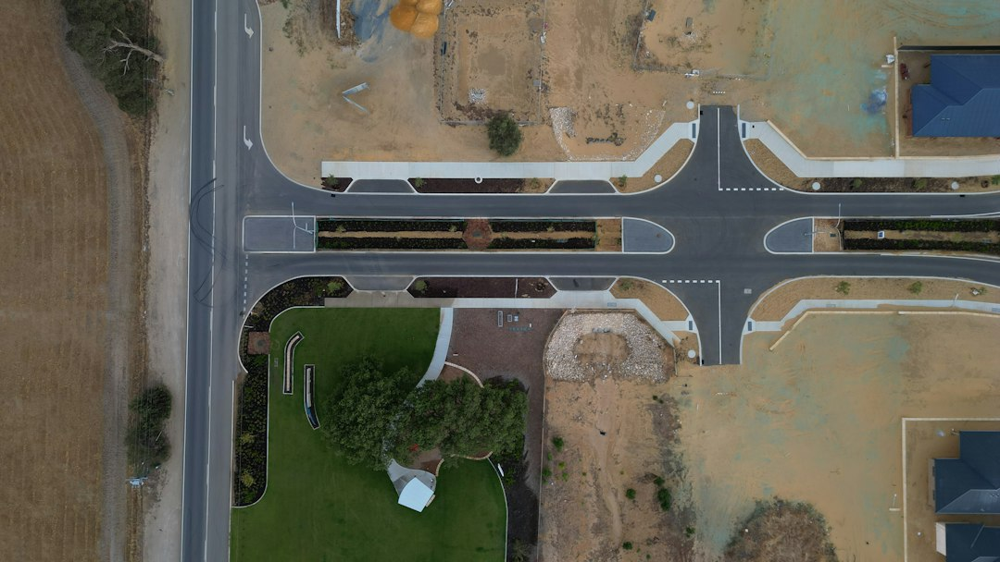

In Perth, the key planning number is 0.5 m of retained ground. The source guide says WA building permit exemption applies only where a retaining wall retains no more than 0.5 m and meets other conditions, while taller or connected work needs proper approval checks. Published Perth price guidance on the source page is roughly $250 to $600 per square metre for limestone block and $450 to $700 per square metre for concrete post and panel, before excavation, drainage and engineering.
For homeowners comparing retaining wall contractors perth options, the useful starting point is not a suburb list but the wall height, site slope, material choice, drainage detail and WA approval pathway.
Retaining Wall Contractors Perth Explained
Retaining Walls Perth frames a Perth wall as a site specific job, because the same length of wall can mean different work on coastal sand, an inner suburban boundary, or a sloped hills block. A useful quote conversation starts with retained height, total length, whether the wall is near a boundary, what sits above it, and whether excavation is part of the same project.
The published guide highlights limestone block, concrete post and panel, timber sleeper, besser block, rock and boulder, drainage systems, engineered walls and repair work. That range matters because the contractor decision is not just a finish preference. It affects footing design, access, drainage, approvals and the way the finished wall sits with fences, garden levels or a future building pad.
- Measure the approximate retained height at the highest point, not only the average.
- Note whether water collects after winter rain or irrigation.
- Photograph the boundary, slope, existing wall face and access path.
- Ask whether the quote includes drainage, excavation and engineering where relevant.
Perth Wall Materials And Where They Fit
Limestone is treated in the source guide as Perth's signature retaining material, linked to the local Tamala limestone setting and the familiar cream block appearance. It can suit garden walls, boundary presentation and locally consistent finishes, but the quote still needs to deal with height, footing, access and drainage rather than assuming limestone alone solves the site.
Concrete post and panel systems use galvanised steel posts with slotted concrete panels. The same broad system may be described as precast, twin side, panel and post, or concrete sleeper style in the local market. It is often compared against limestone where a cleaner panel line, faster modular installation or boundary efficiency is part of the brief.
Besser block appears in the source text for core filled, steel reinforced walls and rendered boundary finishes. Timber sleeper walls are presented for garden terraces and low boundary retaining. Rock and boulder walls are linked to sloped Perth Hills blocks where a battered, free draining look is wanted. For a broader companion overview, see this guide to retaining walls in Perth.
Permit And Engineering Checks Before A Quote
The Perth specific detail with the largest planning impact is the WA permit line. The source guide states that Building Regulations 2012 Schedule 4 exempts a retaining wall from a building permit only if it retains no more than 0.5 m of ground, is not tied to other building work or protection of adjoining land, and does not affect a boundary wall or dividing fence. Local government confirmation is still part of the pre build check.
For walls above that threshold, or walls connected with other building work, the same guide refers to AS 4678 design and engineering sign off. A quote that treats approval as an afterthought can look cheaper early and become harder to compare later. Ask whether the contractor has allowed for drawings, engineering, permit documentation and any boundary related coordination.
- Ask what retained height the contractor has assumed.
- Ask whether the 0.5 m exemption is being relied on, and why.
- Ask who arranges engineering where the wall is structural.
- Ask what happens if site levels differ from the first estimate.
Drainage Is Part Of The Wall
The source guide treats drainage as a structural requirement across wall types, naming ag drain, gravel and geofabric behind the wall. That is a practical Perth detail because the guide describes a wet winter and dry summer cycle as the point where poor drainage can expose wall problems. A quote that only describes visible blocks or panels is missing the part of the wall most people will never see.
When comparing retaining wall builders Perth homeowners should ask for the drainage method in writing. The answer should describe where water goes, what material sits behind the wall, and whether drainage is included in the base price or listed separately. For repairs, the same question applies to the old wall. Leaning, bulging, horizontal cracking, water seepage, gaps near the base and soil slumping above the wall are all warning signs named in the source text.
Who This Applies To
This guide is most useful for Perth property owners planning a new wall, replacing a failed wall, preparing a level building pad, changing a boundary level, or comparing limestone retaining walls with concrete retaining walls before requesting a written quote. It also applies where a low garden edge might become a regulated retaining wall once actual retained height and nearby structures are checked.
It is less useful for choosing a contractor on appearance alone. The better comparison is scoped: material, retained height, drainage, excavation, access, permit position, engineering need, and repair or replacement risk. Homeowners in Cottesloe, City Beach, Scarborough, Trigg, Hillarys, Rockingham, Duncraig, Ballajura, Girrawheen and Joondalup should still base the decision on the actual block conditions rather than the suburb name by itself.
- Measure the wall. Record the approximate length and the highest retained height before asking for a quote.
- Describe the block. Tell the contractor whether the site is sandy, sloped, close to a boundary or part of other building work.
- Check approval. Ask whether the WA 0.5 m permit threshold, AS 4678 design or local government confirmation applies.
- Compare inclusions. Put materials, excavation, drainage, engineering and permit items beside each quote before comparing price.
| Option | Where it may suit | Quote questions |
|---|---|---|
| Limestone block | Local look, garden and boundary presentation, Perth material preference | Is drainage included, and is the retained height under or over 0.5 m? |
| Concrete post and panel | Modular panel and post retaining walls, boundary efficiency, precast style finish | What posts, panels and drainage are specified, and is engineering required? |
| Besser block | Taller engineered walls or rendered boundary finishes | Is it core filled and steel reinforced, and who supplies the engineering detail? |
| Timber sleeper | Low garden terraces and simple boundary retaining | What treatment class is specified, and is the wall within permit exemption limits? |
| Rock and boulder | Sloped blocks and battered free draining walls | How is the batter, drainage and site access allowed for? |
Common questions
Do retaining walls over 500 mm need a permit in Perth? The source guide says that generally they do. It also states that WA exemption applies only where the wall retains no more than 0.5 m of ground and meets other conditions, so local government confirmation should happen before work starts.
What should be included in a retaining wall quote? A useful quote should state wall material, retained height, length, excavation assumptions, drainage, engineering or permit allowance where relevant, and whether the work is repair, replacement or new installation.
Which material is best for a Perth retaining wall? There is no single best material. Limestone, concrete post and panel, besser block, timber sleeper and rock or boulder walls each suit different site conditions, finishes and engineering needs.
How can I tell if an existing wall needs assessment? The source guide names visible lean or bulge, horizontal cracking, gaps at the base, water pooling or seepage after rain, and soil settling or slumping above the wall as warning signs.
This guide covers Perth retaining wall planning, material selection, drainage, permit checks and quote comparison using the supplied source material.